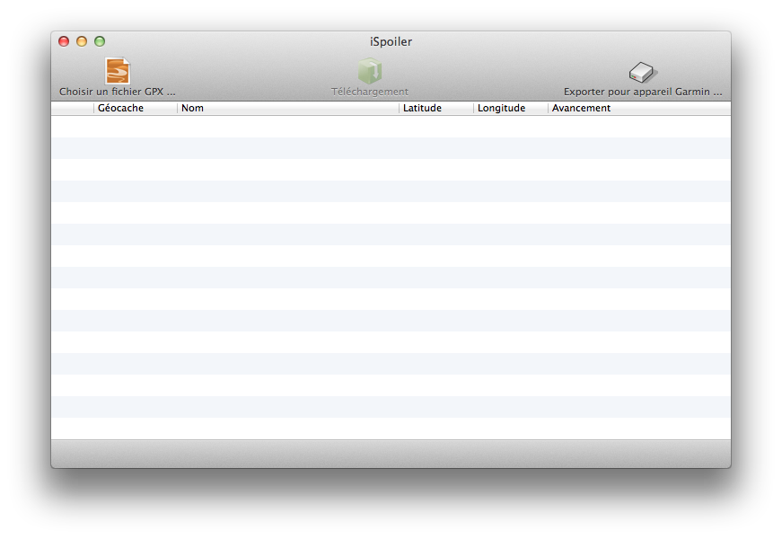

Aide iSpoiler
iSpoiler est un outil qui permet de récupérer les images de descriptions d'une cache et les images "spoilers" à partir d'un fichier pocket query ou un fichier de description de caches.
Présentation de l'interface
L'interface se compose de 3 bouttons :
- Choisir un fichier GPX : permet de sélectionner un fichier GPX contenant la description de la cache. Vous pouvez sélectionner un fichier de description de cache unique ou bien un fichier contenant plusieurs caches.
- Téléchargement : lance le téléchargement des caches dans un dossier prédéfini dans les préférences. Il crée un dossier iSpoilerSync à la racine de ce dossier.
- Exporter pour Garmin : permet d'exporter les images des caches présentes dans le dossier iSpoilerSync dans le dossier de votre choix. Il créera à la racine de ce dossier un répertoire GeocachePhotos structuré de manière à ce que les images apparaissent dans la description des caches de votre appareil Garmin. Vous n'aurez plus qu'à copier le dossier d'images dans la mémoire de votre appareil Garmin.

Support pour iSpoiler